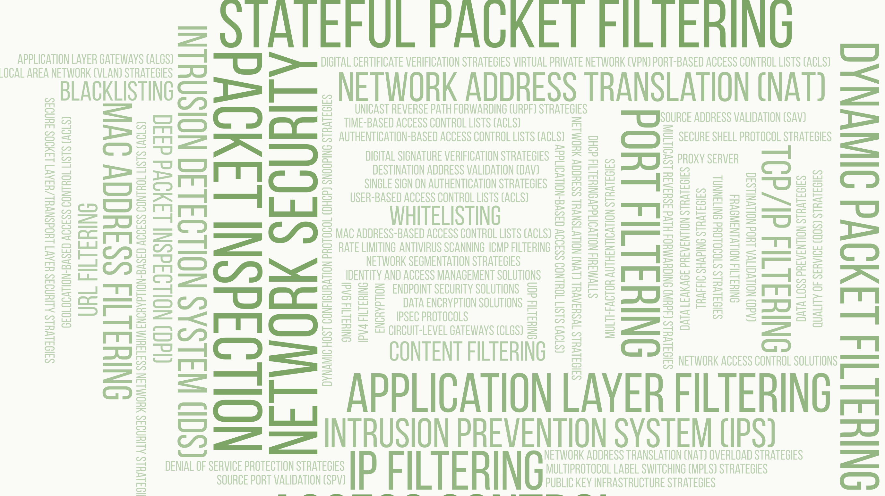
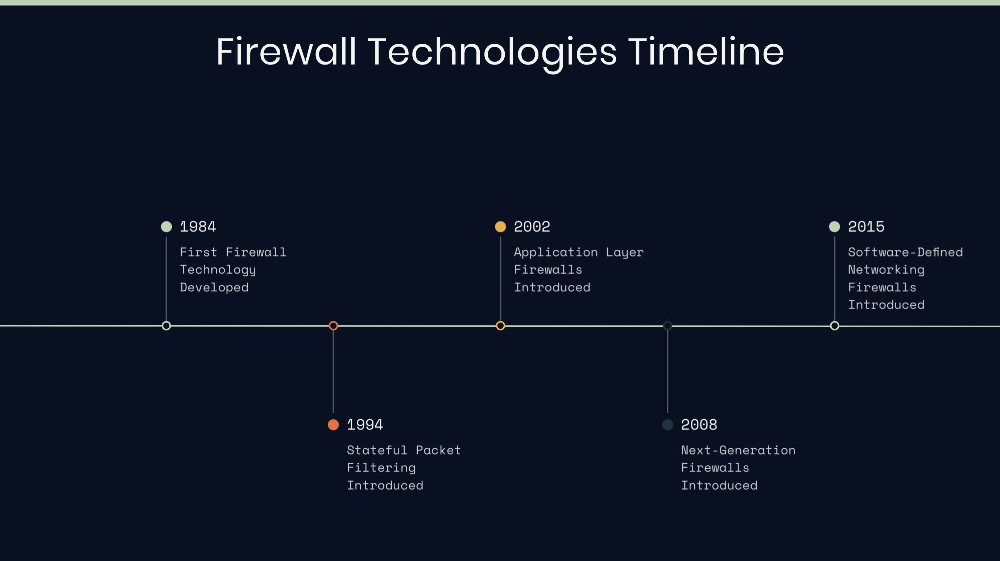

An Overview of Firewalls

A firewall is a network security device used to protect a computer network from potential malicious threats. It controls inbound and outbound network traffic to ensure the security of a particular network by creating a barrier between two networks.
Firewalls are often used to separate a company’s private network (usually a local area network or LAN) from a public network such as the Internet. A firewall allows or blocks certain traffic from passing through, usually by examining all traffic coming into and leaving the network.
To do this, firewalls usually use a security policy or set of rules. These rules determine which types of traffic will be allowed to pass and which types of traffic will be blocked. For example, a firewall may block traffic from certain IP addresses or only allow traffic to certain types of services or applications (for example, email or web browsing).
In addition, firewalls can provide various security features. Some can identify malicious signs like attacks or malware through network traffic analysis. Others enable secure network connections, like VPNs (Virtual Private Networks), ensuring remote employees connect safely to the corporate network.
Shortly, a firewall is a critical tool for protecting the network, blocking malicious threats, and preventing data breaches and other security incidents.
In this section, we will discuss firewall technologies in detail.

It is possible to classify firewalls in different ways. For example, when we classify based on their structure, it is possible to divide them into two groups as “Hardware” and “Software”. If we are to classify them according to their location, we can again divide them into two groups; “Network-Based” and “Host-Based”.
The most common of these classifications is the perspective, in which they are classified according to the OSI layers they support. Let’s take a look at the types of firewalls with this approach:
Layer 3 (Network Layer) Firewalls (Packet Filtering Firewall)
Network layer firewalls operate at layer 3 of the OSI model and control network traffic based on IP addresses. Such firewalls filter traffic by examining IP-level information such as source IP address, destination IP address, protocol type, and port numbers using packet filtering methods. They are often used in gateways or routers.
A Layer 3 firewall is usually located at the Network Layer, which is responsible for routing and forwarding data packets in a network. Such firewalls control traffic based on IP addresses, protocols, and other layer 3 information. Layer 3 firewalls are typically used to filter both inbound and outbound traffic.
Layer 3 firewalls control traffic in a number of different ways. Typically, techniques such as network address translation (NAT), port address translation (PAT) are used.
NAT and PAT manage the traffic in and out of the network while hiding the IP addresses and ports of the devices on the network. This not only makes it harder for people outside the network to discover the network, but also helps to streamline network traffic.
Layer 3 firewalls are generally stateless. This means that they treat each packet as an independent unit, and they usually decide based on the packet’s source or destination IP address, protocol, or ports. These decisions are usually based on a set of predetermined rules.
Layer 4 (Transport Layer) Firewalls (Stateful Inspection Firewall)
Transport layer firewalls operate at layer 4 of the OSI model and are based on transport layer protocols such as TCP (Transmission Control Protocol) and UDP (User Datagram Protocol). Such firewalls analyze network traffic based on source and destination port numbers, link state, and transport protocol. They can monitor traffic by doing due diligence and filter according to security policies.
The Layer 4 (Layer 4) firewall is located in the Transport Layer, which controls the transport of data packets in the network. These firewalls decide on the source and destination IP addresses of the packets as well as the TCP or UDP ports used. They can usually examine network traffic at a deeper level and control the flow of data over a particular port whether a particular application is using it or not.
Layer 4 firewalls are often used to filter both inbound and outbound traffic. They are quite important for protecting and controlling a network. It is especially critical to block malicious traffic and regulate the flow of data on the network.
These types of firewalls are also often referred to as stateful because they can keep track of a “session” or “connection” state. That is, they can monitor all stages of a packet’s journey over the network and make decisions accordingly. This provides more sophisticated security because these firewalls can take into account the past activity of a particular session or connection.
This stateful control goes a step further than Layer 3 firewall because it also takes into account general traffic patterns and connection states on the network, rather than relying solely on individual characteristics of packets.
Especially in a network with sensitive or private information, such a control mechanism can be an important tool for providing enhanced network security.
Layer 7 (Application Layer) Firewalls (Application Level Firewall)
Application layer firewalls operate at the 7th layer of the OSI model and analyze application-level protocols and data communications.
The Layer 7 firewall is located in the Application Layer, which is the top layer of the network model. Such firewalls can usually do a much deeper data inspection. They analyze incoming traffic over application protocols such as HTTP, HTTPS, FTP, DNS.
Layer 7 firewalls have the ability to determine what type of data a particular application or service can send and receive. For example, it can examine and control incoming HTTP or HTTPS requests to a web application or service. This way, they can only allow certain types of requests while blocking other types of requests.
In addition, such firewalls can often analyze the traffic patterns of a particular application or service and detect abnormal or suspicious activity. This provides extra protection, especially against sophisticated threats such as denial of service (DoS) attacks or application level attacks.
Layer 7 firewalls typically provide much more visibility and control over what’s going on at the application layer of a network. This is crucial to improve network security and better manage potential threats. However, properly configuring and managing this type of firewall is often more complex and requires more technical knowledge.
The order we gave above actually also refers to the historical development of firewall devices. At the point reached today, manufacturers are adding more features to their products every day due to both consumer needs and marketing strategies. For this reason, almost all of the products marketed today support Layer 7, in addition to these, they promise a very effective protection not only based on rules and signatures, but also with the support of machine learning, artificial intelligence technologies and real-time threat intelligence.

Cloud Based Firewall
With the development of cloud technologies, the ”… as a service” business model, the concept of cloud based firewall has inevitably entered our lives. Cloud Based Firewalls are firewalls that technically have all the features of L7 firewalls, but that you purchase as a service, not a product.
One of the biggest advantages of cloud-based firewalls is scalability and flexibility. You can easily access more capacity or reduce capacity when you need it. In this way, the amount you will pay is shaped according to your needs. So, the amount of payment also varies, depending largely on how much you need.
Another advantage of cloud-based firewalls is that they are usually faster and easier to update. To quickly provide protection against new threats and zero-day attacks, the firewall must be up-to-date at all times. Cloud-based services usually implement such updates automatically, ensuring that your network is constantly protected against the most up-to-date threats.
As a result, cloud-based firewalls offer greater scalability, flexibility, and ease of use compared to traditional firewalls, while also offering advanced security features and the ability to update quickly. However, it is important to remember that trust in cloud services and the reliability of the cloud provider are vital to the success of this type of security solution.